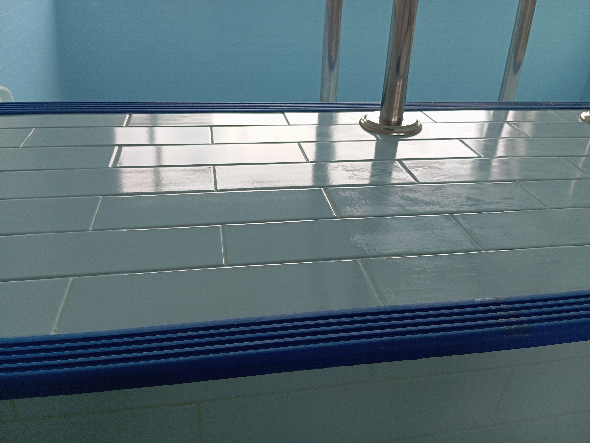
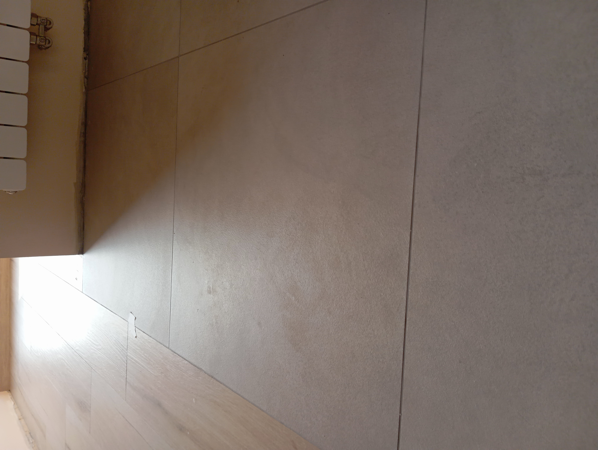
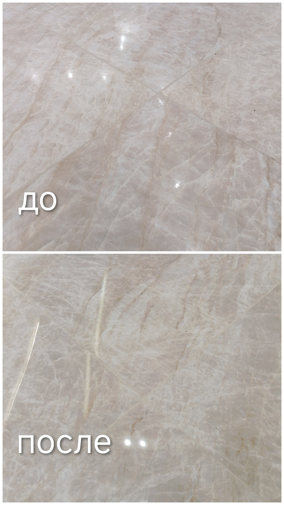

Удаление эпоксидной затирки с плитки и керамогранита в Москве
Специализируемся на удалении эпоксидной плёнки, разводов, следов неправильной замывки и застарелых загрязнений после работы с эпоксидными составами.

Удаление эпоксидной затирки в Москве и Московской области
Работаем по всей Москве и Московской области. Выполняем очистку керамогранита, керамической плитки и мозаики от следов эпоксидной затирки, эпоксидной плёнки, разводов и последствий неправильной замывки.
Выезжаем в квартиры, частные дома, коммерческие помещения, офисы, рестораны, салоны и на строительные объекты. Предварительная оценка возможна по фотографиям.
С какими проблемами обращаются
Эпоксидная плёнка
Матовый или глянцевый налёт, который остается после работы с эпоксидной затиркой.
Разводы после замывки
Следы, которые появились из-за несвоевременной или неправильной очистки.
Остатки затирки
Застывшие следы эпоксидных составов на поверхности плитки.
Сложные поверхности
Матовый керамогранит, рельефная плитка и другие требовательные материалы.
Примеры работ


Как проходит работа
Вы отправляете фотографии
Достаточно нескольких фотографий плитки и общего вида помещения.
Оценка
Определяю сложность загрязнения, примерный объем работ и стоимость.
Очистка
Подбирается технология очистки с учетом типа плитки и характера загрязнений.
Проверка результата
После окончания работ вместе осматриваем поверхность.
Частые вопросы
Можно ли удалить эпоксидную затирку спустя несколько лет?
Во многих случаях да. Возможность очистки зависит от поверхности плитки, состава затирки и степени загрязнения.
Работаете только с Litokol?
Нет. Очищаются различные эпоксидные составы разных производителей.
Можно ли повредить плитку?
Технология подбирается индивидуально. Цель работы — удалить загрязнение, не повредив поверхность.
Вы работаете по области?
Да. Москва и Московская область.
Стоимость работ
Цены
Очистка плитки от эпоксидной затирки: от 1 000 ₽/м².
Итоговая стоимость зависит от:
- типа плитки;
- вида загрязнений;
- площади очистки;
- сложности работ.
Точная стоимость определяется по фотографиям объекта. В большинстве случаев достаточно отправить несколько фотографий в WhatsApp или Telegram.
Контакты
Телефон: +7 (916) 639-39-95
WhatsApp: +7 (916) 639-39-95
Telegram: @simon1784